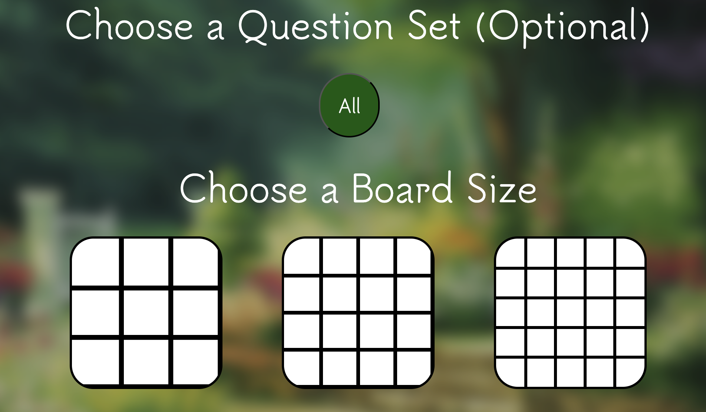

Project Case Study
ZenSpelling
An educational spelling platform for grades 1-5 that combines interactive gameplay,
student profiles, and role-based features for teachers.
Screenshots


Overview
The product focused on making spelling practice engaging through drag-and-drop interactions,
guided prompts, and age-appropriate visual design.
What I Learned
I learned how educational product design, full-stack software design, and collaborative execution
come together when building for real users with different needs, including students and teachers.
What I Accomplished
I helped deliver a semester-long team product that combined gameplay, student profiles, and classroom-oriented
features into an interactive learning platform for elementary students.
Comp Sci Learning Goals
- Attained stronger system-level understanding by working across frontend behavior, backend logic, and role-based platform features.
- Understood software design through building an educational product with clear flows for students and teachers.
- Acquired significant project experience in a group setting through milestone-based teamwork, QA, and shared delivery.
- Developed effective problem solving skills by balancing usability, engagement, and classroom-oriented functionality.
University Wide Leaning Goals
- Critical Thinking: evaluated how interaction design and feature choices would affect student learning and teacher use.
- Creativity: helped shape a playful educational experience instead of a static drill-based tool.
- Collaboration: worked within a four-person team with shared responsibilities across development and QA.
- Communication: participated in planning, demos, and feedback cycles that kept the team aligned.
- Global Responsibility: contributed to a product intended to support better learning outcomes for young students.
Execution Timeline
Work was structured into three major iterations over a semester, each ending with
product demos and client feedback.